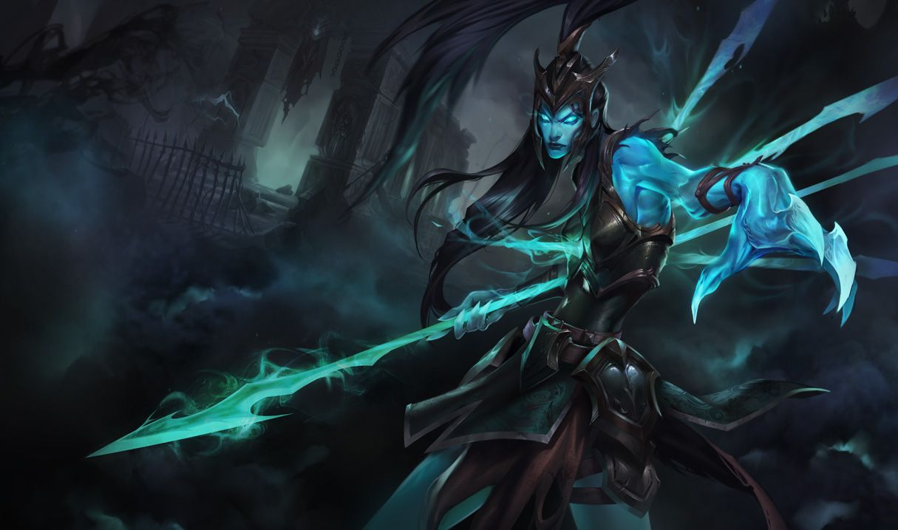

칼리스타
칼리스타
칼리스타, 복수의 화신
Kalista, the Spear of Vengeance

1. 배경
2. 스킬
2.1. 패시브 - 전투 태세(Martial Poise)
기본 공격은 총 공격력의 90%에 해당하는 피해를 입힙니다.
칼리스타는 칠흑의 창을 보유한 상태로 게임을 시작합니다.
아군 중 한 명에게 칠흑의 창을 사용해 게임이 끝날 때까지 지속되는 계약을 맺을 수 있습니다.
칼리스타의 기본 공격은 취소할 수 없으며, 대상이 시야에서 사라지면 피해를 입히지 못합니다.
도약 거리는 신발 업그레이드에 비례합니다.
2.2. Q - 꿰뚫는 창(Pierce)
대상을 처치하면 창이 계속 뻗어나가 다음으로 적중한 대상에게 뽑아 찢기의 중첩을 적용합니다.
칼리스타는 이 스킬을 사용한 후 전투 태세 효과로 도약할 수 있습니다.
2.3. W - 감시하는 혼(Sentinel)
대상 하나당 재사용 대기시간은 10초입니다.
사용 시: 칼리스타가 혼을 하나 보내 지정 영역을 정찰하게 합니다.[16]
혼은 세 번 왕복하고 사라지며, 발각된 챔피언은 4초 동안 모습이 드러납니다. 충전 횟수는 2회이며 일정 시간마다 1회 충전됩니다.
2.4. E - 뽑아 찢기(Rend)
사용 시: 칼리스타가 근처 적에게 박힌 창을 뜯어내며 창의 수에 비례한 물리 피해를 입힙니다. 적중당한 적은 2초 동안 둔화됩니다.
이 스킬로 대상을 처치하면 재사용 대기시간이 초기화되고 마나를 돌려 받습니다.
2.4. R - 운명의 부름(Fate’s Call)
챔피언과 부딪히면 멈추며, 주변 적들을 뒤로 밀어냅니다. 계약자는 챔피언과 부딪히면 최대 공격 사거리만큼 밀려납니다.
3. 장점
강력한 초중반 교전력 및 라인전
준수한 갱 호응/회피 능력
최상급 카이팅 능력과 스펙에서 나오는 강력한 대인전 능력
궁극기의 유틸성
탁월한 중립 몬스터 사냥 및 시야 장악 능력
4. 단점
극악의 조작 및 운용 난이도
앞서 언급한 장점 중 시야 장악, 오브젝트 컨트롤 등은 팀 전체가 운영에 대한 개념을 갖고 움직여야 비로소 빛나는 장점들이다. 반면, 후술할 단점들은 실력이 없는 유저에게 더욱 치명적으로 작용할 수 있다. 참고로 리그 오브 레전드 유저들의 상향 평준화와 챔피언 업데이트 등이 맞물려 고난도로 유명한 챔피언은 칼리스타 이전이든 이후이든 끊임없이 등장해 왔다. 롤의 고난이도 챔피언들 중에는 운용 난이도가 극악이라 그렇지 조작은 그나마 편하거나[24] 역으로 어려운 조작 난이도에 익숙해지면 운용은 상대적으로 편해지는 경우[25]들이 있다. 허나 칼리스타는 조작도 어려운 데다 운용마저 어렵다. 상술했듯 패시브 전투 태세는 게임 내내 끊임없이 위치 선정을 해야 하거니와 원거리 딜러 특유의 카이팅을 요구하기 때문에 난이도가 기본적으로 높고, 사거리마저도 525라는 원거리 딜러 치곤 사거리가 짧은 축에 속하니 딜링 포지션마저도 잘 선정해야 하며 그에 따른 적절한 운용도 필요하니 난이도도 더더욱 올라갈 수 밖에 없다.
외적 요소지만 칼리스타 특유의 조작으로 인한 단점이 또 하나 있는데, 마우스 조작이 평소보다 많아지기 때문에 손목에 부담이 많이 가게 된다. 이는 비단 일반 유저뿐만 아니라 천상계 장인 및 프로게이머들 사이에서도 칼리스타를 손목이 아파 오래 못하겠다는 말이 나돌 정도다. 과장 좀 보태서 스타2 테란 게이머들의 고질적인 손목 부상을 야기하는 해병의 허리돌리기 수준의 컨트롤을 매 게임 하는 셈이다. 여기에 치명타 템을 가지 않고 창을 조금이라도 더 많이 꽂기 위해 몰왕, 구인수, 루난 등 공속템을 극도로 선호하기 때문에 컨트롤이 더욱 많아지고 마우스가 더 바빠지게 된다. 즉, 칼리스타는 게임 내적으로도 외적으로도 플레이어에게 극한의 컨트롤 능력을 요구하는 난이도의 챔피언이다.
매우 높은 서포터 의존도
서포터(계약자)에게도 요구되는 칼리스타 이해도
외줄타기를 강요받고 CC기에 취약함
낮은 딜링 성장성으로 인한 떨어지는 후반 캐리력

저작물은 CC BY-NC-SA 2.0 KR에 따라 이용할 수 있습니다. (단, 라이선스가 명시된 일부 문서 및 삽화 제외)